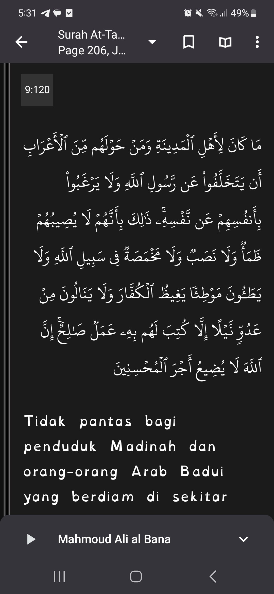

Posts tagged with 'jihad'
Perangilah yang menyerang kalian
"Kalian" Disini adalah ajakan bicara kepada seluruh kaum muslimin. Tidak terbatas satu daerah dengan daerah yang lain.
Alloh berfirman
وقاتلوا في سبيل الله الذين يقاتلونكم ولا تعتدوا إن الله لا يحب المعتدين
Dan perangilah di jalan Alloh orang orang yang memerangi kalian dan jangan kalian melakukan perbuatan yang melampoi batas. Sesungguhnya Alloh tidak mencintai orang orang yang melampoi batas.
Hikmah Kekalahan Kaum Muslimin
Kekalahan kaum muslimin memiliki beberapa hikmah. Diantaranya:
-
Supaya pasar jihad tetap ada terus menerus. Baik berjaga jaga (ribath), persiapan pasukan maupun persenjataan, atau berperangnya itu sendiri.
-
Supaya terfilter keimanan kaum muslimin. Dan terlihat mana keimanan yang benar benar iman yang bermanfaat. Yakni iman ikhtiyari. Iman yang berdasarkan pilihan pemeluknya karena dia melihat kebenaran islam. Bukan iman terpaksa atau karena takut.
Sikap 'yubaththi an' dalam peperangan
Ada 2 makna paling tidak yang dijelaskan oleh as sa'di tentang kata ini:
-
Ogah ogahan untuk persiapan, selalu siaga, apalagi terjun ke medan perang. Beliau menguatkan makna ini.
-
Nggembosi orang lain untuk persiapan, selalu siaga, terlebih terjun langsung ke medan perang.
Kata beliau, kelompok pertama adalah orang muslim lemah iman. Dengan dalil kata منكم. Khithob kepada kalian, wahai kaum muslimin.
Sedangkan makna yang kedua, adalah orang orang munafiq.
Pada akhirnya, kedua sikap ini adalah tercela.
Menganggap bahwa keselamatan dan nikmat yang Alloh berikan itu karena dia meninggalkan perang, meninggalkan persiapan perang, meninggalkan membuat orang oranh kafir marah. Menjilat semua ucapan dan pandangan mereka.
Ya, mereka mereka yang dzolim. Mereka mereka yang memerangi agamamu, karena sebab agama. Mereka mereka yang tidak bisa ditangani kecuali dengan bahasa kekuatan dan senjata.
Semoga Alloh menyelamatkan kita dari sifat ini. Dan Alloh satukan kaum muslimin.
Mulai dari diri kita sendiri. Pupuk keyakinan, bahwa peperangan adalah niscaya untuk menghadapi orang orang seperti mereka.

Acara Penyerahan Tawanan Perang Gaza
Semoga masuk dalam ayat berikut karena termasuk membuat sedih, gila, dan membangkitkan amarah musuh islam.
Alloh lipatkan ganda usaha mereka, dan Alloh tidak akan menyianyiakan amalan hamba hambanya yang menegakkan kewajiban ini.
